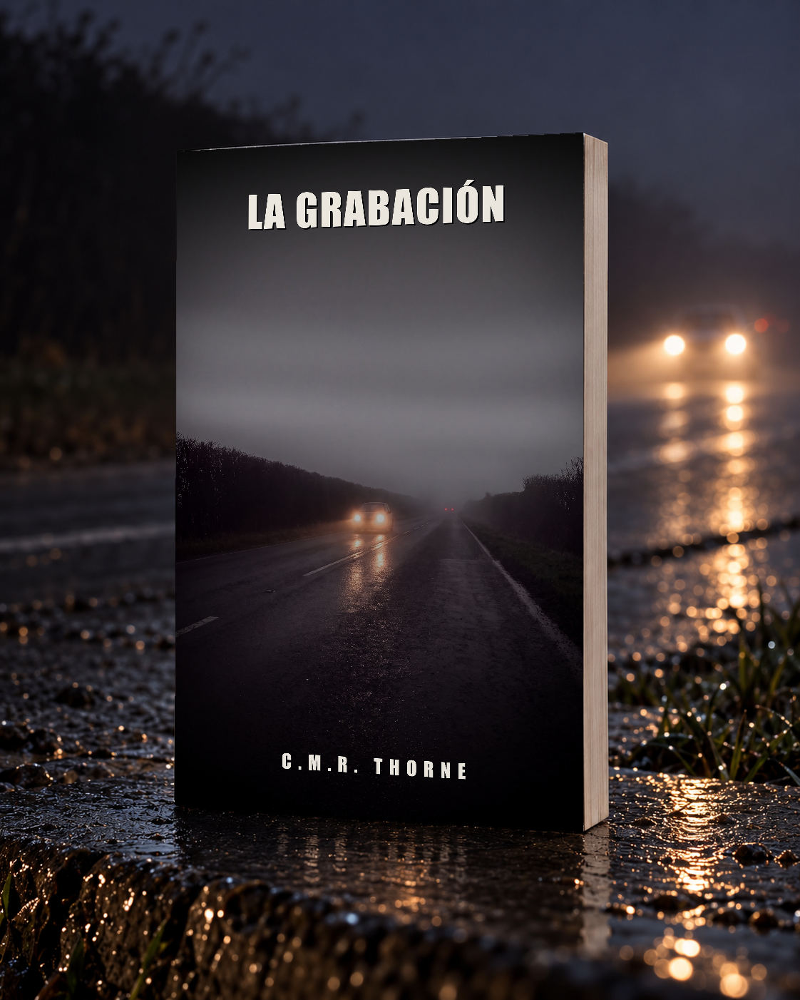

LOWLANDSPRESS
LOWLANDSPRESS

La grabación
Un thriller psicológico
Un clip de dashcam demuestra que la investigación de la muerte de Niek Veldkamp partió de la hora equivocada.
Dónde comprarlo
En veinticinco años, Marten Groenewoud ha enseñado a conducir a mil cuatrocientas personas de su pueblo. Sabe cómo frena cada uno, hacia dónde mira y hacia dónde no. Cuando una abogada lo contrata para reunir viejas imágenes de dashcam del cruce donde en junio atropellaron a una chica de quince años, es solo un encargo. Un montón de clips, un formulario, una firma al pie.
En ese montón hay un clip que lleva ocho años a la vista de todos en el grupo del pueblo. Cuatrocientas personas lo han visto. Se rieron y siguieron bajando, porque va de un imbécil que circula sin luces. Nadie ha mirado lo que cuelga al fondo de la imagen. Demuestra que la hora sobre la que se construyó la investigación de la muerte de Niek Veldkamp era la equivocada.
«No ha pasado nada» es una frase que solo se dice cuando algo ha pasado.
Datos del producto
- Editorial
- Lowlands Press
- Idioma
- Español
- Páginas (Tapa blanda)
- 445
- Páginas (Tapa dura)
- 348
- Palabras
- 102.688
Lee el principio
El principio del libro, las mismas páginas que una tienda deja hojear. Sigue leyendo en cualquiera de las tiendas de arriba.
Prólogo
DASH_20211113_004037.MP4 duracion 00:01:03 1920x1080 29,97 fps audio SI GPS sin datos compartido en: Oosterwissel Rijdt Mee (412 miembros) 13-11-2021 08:52 40 me gusta
La grabación empieza demasiado baja y demasiado ancha. Por debajo se ve un trozo de salpicadero que no importa.
Carretera comarcal mojada. Limpiaparabrisas en la dos. A la izquierda el arcén, a la derecha la cuneta, y a lo lejos el resplandor naranja de un pueblo que a esa hora ya está casi apagado. En la esquina superior derecha, la hora quemada en la imagen, blanca sobre negro, tal como la ajustó la fábrica y como nadie la ha cambiado nunca: 00:40:37 13-11-2021.
No hay preámbulo. Los faros ya están ahí.
Están demasiado a la izquierda. Se mantienen demasiado a la izquierda. La cámara los ve crecer, y en un segundo aparece una furgoneta alta y clara sin luces de posición laterales que se lleva la línea central como si fuera suya, y después un tirón a la derecha del vehículo en el que va la cámara, la imagen que se ladea, el arcén que sube, hierba, un poste, y el sonido de un hombre que se asusta. Un solo sonido, corto.
Después se detiene.
Durante treinta y cinco segundos no ocurre nada más que un hombre soltando tacos. Le grita a un parabrisas. Llama a la furgoneta cosas que no tienen nada que ver con una furgoneta. No hay miedo en su voz, solo el alivio que parece rabia, y a mitad de camino se dice a sí mismo, más bajo, como si lo estuviera anotando: que llevaba esto, que menos mal que llevaba esto.
Se refiere a la cámara.
A los cuarenta segundos vuelve a arrancar. La imagen se endereza, los limpiaparabrisas retoman el ritmo, el asfalto vuelve a ser una raya que desaparece bajo el capó. Ya no hay tráfico de frente. Ya no hay nada.
En los últimos once segundos la carretera sale del pólder y entra en el borde de un pueblo. A la izquierda pasa un aparcamiento, un edificio bajo, una marquesina sin gente, y detrás una franja de grava con una hilera de postes metálicos, ocho, bien espaciados, cada uno con una lucecita que se disuelve en la lluvia hasta ser una mancha.
Del cuarto poste cuelga un cable.
Capítulo 1
El chico se llamaba Sem y estaba sentado en el coche como se sientan todos la primera vez: demasiado cerca del volante, con los hombros subidos casi hasta las orejas, como si aquella cosa pudiera ponerse a morder en cualquier momento.
—Asiento —dijo Marten.
—¿Qué le pasa al asiento?
—Está bien para alguien de un metro sesenta. Échalo atrás hasta que la rodilla te quede apenas doblada con el embrague pisado a fondo.
Sem buscó la palanca con la mano, no la encontró, miró abajo, sí la encontró, y se echó tan atrás que apenas llegaba a los pedales. Marten le dejó sentirlo tres segundos.
—Un poco adelante.
—¿Así?
—Pisa el embrague a fondo. Del todo. Hasta que no baje más. —Marten le miró la pierna—. Ahora tienes la rodilla estirada. Si tienes que esquivar, te empujarás contra el respaldo en vez de girar el coche. Dos clics adelante.
Eran las ocho y cuarto de una mañana de lunes de septiembre. No llovía, pero había llovido, y la Zuivelweg estaba mojada y vacía. Al otro lado del aparcamiento tres furgonetas estaban de morro contra el seto, como cada mañana, y más allá un tractor daba vueltas con una luz amarilla giratoria que nadie necesitaba.
—Retrovisores —dijo Marten—. Primero el interior. ¿Qué quieres ver en él?
—La luna trasera.
—Entera. No tu cabeza, no la bandeja. La luna entera, y sin necesidad de moverte para verla. —Esperó a que estuviera bien—. Los exteriores. La mayoría los pone demasiado hacia dentro, porque así se ven el propio coche y eso les da sensación de seguridad. Gíralo hacia fuera hasta que tu parachoques trasero apenas desaparezca.
—Entonces no veo nada de mí.
—Dónde estás tú ya lo sabes.
Salieron del recinto, cruzaron la rotonda y llegaron al polígono industrial donde las farolas iban numeradas y donde un lunes por la mañana no venía nadie. Sem no lo hacía mal. Hacía lo que hacen todos: conducía hasta el punto donde estaba en vez de hasta el punto donde iba a estar.
—¿Adónde miras?
—A la carretera.
—Miras al capó. Mira al final de la calle y el capó se coloca solo.
—Pero entonces no sé si voy recto.
—Notas si vas recto. Se mira hacia donde uno va. —Marten señaló a lo lejos con dos dedos—. Eso no es cosa de conducir, andar también es así. Cuando cruzas una puerta no miras a los pies.
En la tercera curva la cosa se torció, como siempre se tuerce en algún punto. De un vado salió una furgoneta de reparto con el morro demasiado fuera, y Sem lo pisó todo a la vez: freno, embrague y un golpe de volante que no necesitaba. El coche se quedó atravesado con el morro a metro y medio de la puerta del conductor de la furgoneta. El repartidor levantó una mano a modo de disculpa y siguió.
Sem respiraba deprisa. Todavía tenía las manos en el volante y los codos le temblaban.
—Ahí lo tienes —dijo Marten.
—Perdón.
—¿Por qué?
—Creí… creí que le había dado.
—Yo también. —Marten miró por el retrovisor exterior, vio que no venía nada por detrás y lo dejó donde estaba—. Pero no ha pasado nada.
—Podía haber pasado.
—Eso es otra cosa. Eso es lo que dicen los que quieren que un casi accidente sea, aun así, un accidente. —Marten señaló el sitio donde había estado la furgoneta—. Mira. Frenaste a treinta. Firme mojado, neumáticos fríos, sin intervención del ABS, porque no bloqueaste las ruedas, si no lo habrías oído. Te paraste en menos de doce metros. Él necesitaba dos más para sacar el morro del todo. Había sitio. Había un montón de sitio.
—No parecía un montón de sitio.
—No —dijo Marten. Miró por el retrovisor—. Por eso mido.
Le hizo arrancar de nuevo. Le dejó conducir todo el tramo hasta el puente sin decir una palabra, porque después de un momento así nada funciona tan bien como tres minutos de silencio.
En el puente aparcaron. Sem tiró del freno de mano con las dos manos, lo que resultaba ridículo, y Marten no dijo nada.
—Fuera —dijo—. Vamos a dar una vuelta.
—¿Al coche?
—Al coche.
Lo hacía en cada primera clase, y llevaba veinticinco años haciéndolo, y en cada primera clase el alumno lo consideraba una tontería hasta que iba por la mitad.
—Dime lo que ves.
—Un coche.
—Sí. ¿Qué más?
Sem rodeó el capó. —Está mojado. Hay barro en el estribo.
—¿De dónde viene ese barro?
—¿De la carretera?
—De los arcenes que segaron la semana pasada. Entonces, ¿qué sabes ahora de este tramo de carretera?
El chico se lo pensó, y lo hizo el tiempo suficiente para que fuera de verdad. —¿Que puede resbalar?
—Que puede resbalar donde no lo ves. Sigue. —Marten fue hacia la parte de atrás—. ¿Dónde está el sol?
—Detrás de nosotros.
—¿Y cuando volvamos?
—En mis ojos.
—En tus ojos, y en septiembre a las nueve y media el sol está justo a la altura a la que la visera no sirve de nada. Entonces vas a entornar los ojos, y entornándolos pierdes la mitad de la vista lateral, y no te das cuenta, porque entornar da sensación de ver mejor. —Golpeó ligeramente el portón—. Y si ahora mismo hubiera aquí un camión, ¿dónde no te vería?
Sem se puso en el sitio donde creía que estaba la respuesta, y eso quedaba a dos metros del sitio bueno, y Marten lo movió con una mano en el hombro.
—Aquí. Y ese es el único sitio donde de verdad acabas parado en un cruce.
Volvieron a subir. Marten condujo él mismo de vuelta al recinto y le pidió a Sem que contara lo que había pasado en la clase, porque así empezaba con todos, para que al cabo de tres meses supieran decir por qué algo había salido bien, y no solo que les había parecido bien.
La madre de Sem entró en el aparcamiento sin poner el intermitente. Cuando el chico cerró la puerta detrás de sí, el teléfono de Marten empezó a vibrar en el bolsillo de la puerta. Lo dejó sonar, siguió al coche con la vista hasta que pasó la rotonda y devolvió la llamada.
—Groenewoud —dijo Bakhuis—. ¿Tienes boli?
—Tengo un teléfono.
—Sí, sí. Vale. —Bakhuis era tramitador de siniestros en una de las dos aseguradoras que contrataban a Marten, y hablaba siempre como si tuviera a otras cuatro personas en espera, cosa que probablemente era cierta—. Tengo algo distinto de lo habitual. No es una reconstrucción de un caso concreto. Es un patrón.
—Cuéntame.
—Tenemos una reclamación de responsabilidad de una familia. Una hija de quince años, atropellada en bici, secuelas permanentes en una pierna. Nosotros no llevamos las lesiones, eso lo cubre la responsabilidad civil del contrario, pero la abogada de la familia va contra el titular de la vía. Trazado defectuoso. Poco visible. Dicen: esto no fue un accidente, esto era cuestión de tiempo.
—Y queréis saber si es cierto.
—Queremos saber si hay un patrón. Todo lo que alguna vez se haya registrado en ese cruce. Atestados policiales, siniestros nuestros y de los demás, avisos al ayuntamiento, quejas, casi colisiones si puedes encontrarlas. Y grabaciones.
—Grabaciones de un cruce en un pueblo.
—Dashcams —dijo Bakhuis—. Todo el mundo tiene una. Hay uno de esos grupos donde lo vuelcan todo, ya me he informado. Al que pida con buenas maneras le dan un montón. —Sonó papel al otro lado—. Tú eres de allí, vives allí y tienes un archivo que no tiene nadie más. ¿A cuánta gente has dado clases a estas alturas?
—Mil cuatrocientos.
—Exacto. Puedes ir tú puerta por puerta.
Marten miró al puente. Una mujer lo cruzaba en bici con dos cajas delante y lo hacía sin manos, lo que en ese puente era mala idea y lo que probablemente llevaba treinta años haciendo.
—¿Cuál es la tarifa?
—La de siempre, más horas por la recogida. Cuarenta como mucho, y si te pasas quiero saberlo antes de que te pases.
—Es poco para todo lo que alguna vez se haya registrado.
—Por eso te llamo a ti y no a una empresa de Ámsterdam. —Bakhuis apartó algo—. Y una cosa, Groenewoud: esto va a ser un expediente que va a leer un juez. Todo fechado, todo trazable, nada recortado por ti.
—Eso no lo hago nunca.
—Ya lo sé. Aun así lo digo.
Marten cogió el portapapeles del asiento de atrás, porque este tipo de cosas las apuntaba en papel, siempre, y puso la fecha arriba. Lunes 3 de septiembre. Pensó en las chicas del grupo de otoño que tenía esa tarde, en la estufa de la sala de teoría que no funcionaba desde mayo, y en el hecho de que un estudio de patrón le daría probablemente seis semanas de trabajo en un mes en el que le venía bien.
—Dame la ubicación —dijo.
—Un momento. —Bakhuis hizo clic en algo—. Zona rural de Oosterwissel. Cruce de la carretera comarcal con la, espera, ¿cómo se escribe? Wisseldijk.